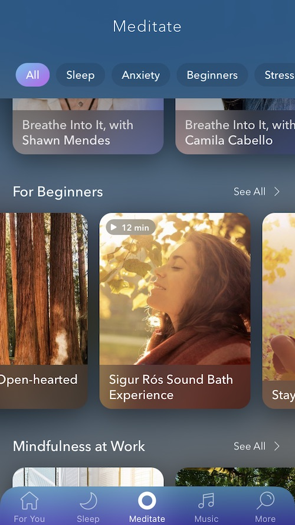

How to Meditate for Improved Creativity and Inspiration
By: Nora
Benefits of Meditation for Creativity and Inspiration
Meditation has long been perceived as a technique to quiet the mind, achieve inner peace, and find spiritual enlightenment. However, did you know that it can also be a powerful tool for enhancing creativity and inspiration?
The practice of meditation has been found to have many benefits, including reducing stress levels, enhancing focus and attention, and improving emotional regulation. But perhaps one of the most exciting benefits of meditation is its ability to stimulate the creative process.
Studies have shown that meditation can increase brainwave activity in the alpha and theta ranges, which are linked to creativity and inspiration. This increased activity can lead to more divergent thinking, expanded awareness, and a greater ability to come up with fresh ideas.
Furthermore, meditation is an excellent way to access the subconscious mind. By entering a state of deep relaxation and quieting the conscious mind, we can tap into our innermost thoughts, desires, and ideas. This can lead to breakthroughs in creative thinking and problem-solving, as well as a broader perspective on life and the world around us.
Meditation is also a great way to cultivate a sense of connection with others and the world at large. By developing a practice of mindfulness and compassion, we can open ourselves up to new experiences and insights that can fuel our creativity.
So whether you're an artist, writer, musician, or simply looking to improve your creative thinking skills, incorporating meditation into your daily routine can be a game-changer. Not only can it help you reduce stress and find inner peace, but it can also unlock a world of new ideas and possibilities.
ad space
Preparing for Meditation
Preparing for Meditation: The Key to Unlocking Creativity and Inspiration
Meditation is a powerful tool that can help unleash your full creative potential. Many successful people like Steve Jobs and Oprah Winfrey have talked about the benefits of a daily meditation practice for enhancing creativity, focus, and productivity. However, before you can reap the rewards of meditation, you need to prepare your mind and body appropriately.
The first step to preparing for meditation is finding a quiet and comfortable place where you won't be disturbed. It could be a designated meditation space, your bedroom, or even your office. Next, it's essential to set the mood with some calming music, dim lighting, or scented candles.
Once you've found a peaceful environment, you need to adopt a comfortable sitting posture. You can sit on a cushion, chair, or mat - whatever works for you. The key is to ensure that your spine is straight, and your head is aligned with your spine. This helps to keep your mind alert and focused throughout your meditation session.
With the right environment and posture, you can now shift your focus to your breath. Take a deep breath in, hold it for a few seconds, and then release it slowly. Repeat this process three to four times, feeling your body relax with each breath.
Finally, it's crucial to set an intention for your meditation session. Whether it's to improve your creativity, reduce stress, or find inspiration, setting an intention helps to direct your focus and energy towards your goal.
In conclusion, by following these simple steps, you can prepare yourself for a productive and inspiring meditation session. Remember that meditation is a journey, and it takes practice to reap the full benefits. With time and commitment, you can train your mind to be more focused, creative, and resilient than ever before. So, take a deep breath and dive into the world of meditation to unlock your full potential.
ad space
Meditation Techniques for Creativity and Inspiration
As you sit there, trying to come up with a fantastic idea, your mind is blank. You've got nothing. Frustration starts to set in, and you feel like giving up. But wait, have you tried meditation? Practicing meditation regularly, especially with specific techniques, can help clear your mind and unlock creativity, leading to inspired and innovative ideas.
Meditation is the practice of focusing your mind on a particular thought, feeling or activity to achieve a state of calmness and relaxation. By doing so, you're able to develop a sense of clarity and focus that can help to enhance your creativity. Meditation has been proven to have a positive impact on the brain’s cortex, which is responsible for creative thinking, planning, decision-making, and problem-solving.
Incorporating meditation into your daily routine doesn't have to be complicated. In this subheading, we'll explore meditation techniques that can be invaluable for creatives seeking inspiration.
One technique that has helped many creatives is the breath meditation, where you focus on inhaling and exhaling deeply while releasing any stress, tension or anxiety from your body. This technique can help to calm your mind and increase focus, allowing you to generate better ideas or find fresh perspectives.
Another technique that could help improve your creativity is the visualization meditation. This technique challenges your imagination by creating detailed mental images of the things you want to achieve or accomplish. Visualization meditation enhances creative visualization and, in the long run, hones your creativity, enabling you to see things differently and imagine innovative solutions.
Lastly, moving meditation can be a great technique, especially for creatives who struggle to sit still. Moving meditation involves brisk walking or light stretches while mindfully focusing on your thoughts and surroundings. Moving meditation can improve your mood, reduce stress levels, and spark creative ideas.
Meditation Techniques for Creativity and Inspiration are a great way to enhance your creativity, unlock your imagination, and generate innovative ideas. Incorporating these techniques into your daily routine will improve your mental wellbeing and spark your creativity.
ad space
Tips for Maintaining a Meditation Practice
Meditation has been extensively studied and practiced for centuries, and research shows that it contributes to improved creativity, focus, and inspiration. As a result, adopting a consistent meditation practice may be one of the best things you can do to boost your creativity and overall well-being. However, maintaining a meditation routine is not always easy, so here are some helpful tips to make it easier.
The first step in establishing a consistent meditation practice is to realize that getting started can be a challenge. You may be feeling overwhelmed or unsure about the meditation process, particularly if you have never meditated before. If this is the case, start slowly and add time as you feel comfortable. Begin with just five to ten minutes of meditation per day, gradually increasing the amount of time until you can meditate for thirty minutes or more.
To help you maintain a regular meditation practice, try to establish a routine. Choose a time and place to meditate each day that works best for you, such as early in the morning or before bed. This routine helps to reinforce the idea that meditation is an essential part of your daily schedule, and helps you to view this time as a non-negotiable part of your schedule.
Another helpful tip for establishing and maintaining a meditation practice is to find a great meditation resource. This resource can be a book, app, or website that provides instruction, inspiration, or motivation. A reliable meditation app can make the practice easier and more convenient than ever.
Finally, it is essential to stay committed to your meditation practice, even if it is challenging. As with any habit or routine, consistency is key. Even if your meditation session is shorter than usual, try to do it each day. Remember that you'll get better with practice, and that you are making steps towards your goal.
In summary, meditation is an effective way to increase creativity, focus, and inspiration in your daily life. By establishing a daily routine, finding reliable resources, and staying committed to your practice, you can make a positive impact on your life in a meaningful way.
ad space
Examples of Creativity and Inspiration Enhanced by Meditation
As humans, we are drawn to creativity and inspiration. Our natural curiosity and desire to create new things can be enhanced by incorporating a meditation practice into our daily routine. Artists, writers, musicians, and entrepreneurs have all reported increased creativity and inspiration after meditating.
One of the most famous and celebrated writers of all time, J.K. Rowling, has credited meditation with helping her overcome writer's block and find inspiration for her bestselling Harry Potter series. She has said that meditation helps her access the "well of creativity" within herself and find new story ideas.
Musicians such as Madonna, Sting, and Paul McCartney have also spoken about the benefits of meditation on their creative processes. Sting has been practicing meditation for over 25 years and claims it has helped him find inspiration for his music and lyrics.
Steve Jobs, the co-founder of Apple, was known for his meditation practice and attributed much of his success to the clarity and focus he gained through meditation. He famously said, "If you just sit and observe, you will see how restless your mind is. If you try to calm it, it only makes it worse, but over time it does calm, and when it does, there's room to hear more subtle things; that's when your intuition starts to blossom and you start to see things more clearly and be in the present more. Your mind just slows down, and you see a tremendous expanse in the moment. You see so much more than you could see before."
Meditation has been scientifically proven to enhance creativity and inspiration. A study conducted at Leiden University in the Netherlands found that participants who meditated for just 25 minutes showed an increase in divergent thinking, a type of thinking that generates many different ideas, as compared to those who did not meditate.
Incorporating a meditation practice into your daily routine could be the key to unlocking your creative potential. Whether you're an artist, writer, musician, or entrepreneur, the benefits of meditation are undeniable, and the examples of those who have found creative inspiration through meditation are inspiring.
ad space
Conclusion
As you explore the many benefits of meditation, it becomes clear that this practice has the power to transform your life in countless ways. For those looking to improve their creativity and find inspiration, meditation is an essential tool that can help you unlock your full potential.
Throughout this website, we've explored the various techniques, tips, and tricks for meditating effectively, but now it's time to wrap up our journey and draw some conclusions about what we've learned.
First off, remember that there is no right or wrong way to meditate. It's a personal experience, and the most important thing is finding what works best for you. Whether you prefer guided meditations, mantra repetition, or simply sitting in silence, the key is to make meditation a regular part of your routine.
Research has shown that regular meditation can have a positive impact on creativity and inspiration, not to mention reducing stress and improving overall well-being. By taking time to clear your mind and focus your attention, you allow your brain to relax and access new ways of thinking.
Of course, the benefits go beyond just sparking new ideas. Meditation can help you stay focused and motivated, reduce negative self-talk, and even improve your relationships with others.
So, in conclusion, we encourage you to continue exploring the world of meditation and discover all the ways it can help enhance your life. With practice and patience, you too can tap into a wellspring of creativity and inspiration that will serve you well in all aspects of your life.
ad space